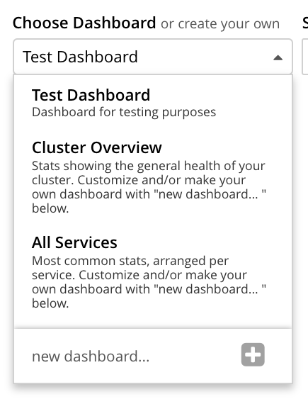

Manage Statistics
Statistics on Couchbase Server can be monitored; per bucket, per node, per service, and per cluster. By means of Couchbase Web Console, appropriate combinations of statistics can be selected for display, across multiple interactive dashboards.
Understanding Statistics Management
Couchbase Server provides statistics; which are updated continuously, and so always represent the current state of the cluster. Statistics refer to buckets, nodes, clusters, and services.
Statistics can be viewed by means of Couchbase Web Console, the Couchbase CLI, and the REST API.
Manage Statistics with the UI
Users with the Full Admin or Bucket Admin role can assemble statistics as groups of charts, on the Dashboard of Couchbase Web Console. This is visible by default after login; and can at any time be displayed by left-clicking on the Dashboard tab, in the left-hand navigation bar:
Initially, prior to any definitions having been made, the Dashboard appears as follows:
At the foot of the Dashboard, numbers are displayed; to indicate which cluster-nodes are active, failed-over, pending rebalance, and inactive. The services present on the cluster are also indicated. Near the top, a notification is provided, regarding buckets: Couchbase Web Console organizes statistics by bucket: therefore, until a bucket is added to the cluster, no statistics can be shown.
To add a bucket, left-click on one of the options provided by the notification. Either left-click on Buckets, to add a custom bucket; or, left-click on Sample Buckets, to install a sample bucket.
The following examples assume that the travel-sample bucket has been installed.
The dashboard now appears as follows:
The Cluster Overview thus displays animated charts that provide a variety of information on the status of data-management on the cluster. Additional information can be displayed by left-clicking on the Node Resources control, located near the bottom of the screen.
Dashboard Access
All chart-content is provided by bucket. Users whose roles allow them both to access Couchbase Web Console and see administrative details on one or more buckets are able to see the default chart-content for those buckets. For example, the Full Admin, Cluster Admin, Read Only Admin, Local User Security Admin, and External User Security Admin roles permit display of charts for all buckets defined on the cluster; while the Bucket Admin role permits display of charts only for those buckets to which the role has been applied.
Users who can see the default content for some or all buckets can also create their own, customized content for those buckets. Note that customized content is saved on Couchbase Server only on a per user basis: therefore, for example, when a Full Admin creates customized content, it is visible only to the Full Admin, not to any other user.
Dashboard Controls
In the upper part of the screen, the following controls appear:
The control at the left reads Cluster Overview. When left-clicked on, it displays a pull-down menu, as follows:
The Couchbase Web Console Dashboard screen can be used to display multiple dashboards in succession, each accessed from this pull-down menu. Currently, the menu provides two dashboards for display. Cluster Overview, which is displayed by default, provides statistics on RAM, operations, memory usage, replication, CPU, and other resource-related areas. All Services provides statistics for services and server-systems.
The second control to the right reads, by default, Minute. This control allows selection of the time-granularity for chart-display. Left-click on the control to display a pull-down menu of options:
The third control to the right provides a pull-down menu that lists the buckets defined on the cluster. The selected bucket is that in relation to which statistics are currently shown. The current option, travel-sample, is the only option available, since it is the only bucket currently loaded.
The fourth control to the right reads All Server Nodes, and indicates in parentheses the number of nodes currently in the cluster. Left-click on the control to display the individual nodes:
The default selection allows data from all server nodes to be displayed simultaneously. By selecting an individual node from the pull-down menu, the displayed data is restricted to that corresponding to the selected node.
At the far right of the screen, the Reset control is displayed:
Left-clicking on this control provides the following notification:
As this indicates, confirming will delete all previously made customisations. Therefore, to keep changes you have made to your dashboard-appearance, left-click on Cancel.
Add a Dashboard
A dashboard can contain groups of charts. The dashboard is first defined; then groups can added to the dashboard; with charts being added to each group.
To define a dashboard, access the New Dashboard control, in the pull-down menu accessed from the first of the controls, at the left of the screen:
Left-clicking on the '+' symbol displays an extension to the pull-down:
The editable new dashboard field can be used to enter a name for the dashboard being defined. Optionally, a description of the dashboard and its purpose can be added in the optional description… field. The radio buttons towards the bottom allow selection between the options start w/ current charts (in which case the new dashboard’s content will be initialized with whatever charts are already displayed on the screen) and start blank, in which case the new dashboard will initially show no charts at all.
To create a new dashboard named Test Dashboard that starts with the existing content, enter data as follows:
Left-click on the Save button. The new dashboard is now displayed, as follows:
Currently, the dashboard contains now content. Buttons labeled Add Group and Add a Chart appear to the right.
Note that the new dashboard is now listed in the pull-down menu:

Add a Group
To add a group of charts to the newly created dashboard, make sure that the new dashboard is selected in the Choose Dashboard field, and then left-click on the Add Group button, at the upper right:
This displays the New Group dialog:
Add an appropriate name for the group of charts you are creating, and left-click on the Save button:
The dashboard is redisplayed, and now appears as follows:
The newly defined group Test Group appears on the dashboard. Currently, it contains no charts.
Left-click on the Add a Chart button, to the right of the Test Group field:
This brings up the Add Chart dialog:
The upper area of the dialog is headed Multi-Stat or Multi-Node Chart? It provides two radio buttons:
-
Selecting show separate nodes + single statistic creates a chart that displays a single statistic for each of the nodes in the cluster. This allows easy visual comparisons to be made between the states of the different nodes. This is the default selection.
-
Selecting combine node data + multiple stats per chart creates a chart that displays multiple statistics for the cluster as a whole. This allows easy visual comparisons to be made between different speeds and usage-rates, calculated across all of the nodes.
In the middle of the dialog, interactive tabs appear for System, Data, Index, Query, Search, Analytics, Eventing, and XDCR. By left-clicking on any of these, associated statistics are displayed in the lower section of the dialog. The System tab is selected by default: consequently, the associated statistics CPU, Idle Streaming Requests, Streaming Wakeups, and others are displayed. Each of these statistics is accompanied by a check-box, to permit its selection.
Note that the choice made with the upper radio buttons affects the availability of statistics for selection. For example, selecting show separate node + single statistic ensures that after a single statistic has been selected, the rest are greyed-out.
Creating a Single-Statistic Chart, Referencing All Nodes Separately
Accepting the default radio button selection, show separate nodes + single statistic, select the CPU statistic from the lower part of the dialog:
A tooltip is provided, indicating that the statistic concerns Percentage of CPU in use across all available cores on this server.
The choice is confirmed, adjacent to a green checkmark, at the lower left of the dialog.
All statistics other than CPU are greyed out.
Note that at the upper right, a selector is provided whereby the size of the chart, in its default appearance within the dashboard, can be specified:
Leaving the selection as S (for small), left-click on the Save Chart button. The dashboard now appears as follows:
The chart created for CPU is now displayed at the left. The chart features a line for each of the two nodes in the cluster. By hovering the mouse-cursor over the corner of the chart, controls can be displayed in the chart’s upper-right corner:
The garbage-can icon allows the chart to be deleted: a notification will appear, asking for confirmation. The notepad icon allows the chart to be edited: a dialog named Edit Chart is displayed (note that this dialog is almost identical in appearance to the Add Chart dialog already examined).
By hovering the mouse-cursor over the central, data-bearing area of the chart, a pop-up can be displayed, confirming the exact statistic displayed at the cursor-location:
As this clarifies, the chart’s blue and orange lines provide the CPU statistic for each of the cluster’s two nodes. To improve readabiliy further, left-click on the chart, to maximize it. The appearance is now as follows:
Note the vertically minimized version of the chart, which appears at the foot of the display, with the magnifying-glass icon to its left. By clicking on this at a starting-point on the horizontal axis, and dragging the cursor to the left or right, a time-period can be selected; which is then reflected in a redisplay of the main chart. For example:
Note also that by accessing the control at the upper-center of the maximized chart, the time-granularity for display can be modified. For example, change hour to minute:
The maximized chart now appears as follows:
Minimize the chart by left-clicking on the 'X' icon, at the upper-right:
Creating a Chart of Multiple Statistics, Each Representing the Whole Cluster
Left-click on the Add a Chart button.
When the Add Chart dialog appears, select the combine node data + multiple stats per chart radio button. Accepting the default System setting, select the CPU, Available RAM, and Swap Used checkboxes:
Note that because certain statistics are incompatible with one another, in terms of co-located display, the selection of some may grey-out the others — as is the case with Idle Streaming Requests, Streaming Wakeups, and HTTP Request Rate here.
Left-click on Save Chart, to save. The dashboard now appears as follows:
Left-click on the new chart, to maximize:
The chart provides individual lines for CPU, Available RAM, and Swap Used. The calibration on the left vertical-axis is for CPU percentage; that on the right for megabytes of RAM and swap.
From this point, additional charts can be created for the other system services, with different statistic-combinations selected for each. Additional groups of charts can be defined, and multiple dashboard-instances simultaneously maintained.
Manage Statistics with the CLI
On the command-line, statistics can be managed with the cbstats tool. This allows a bucket to be specified as the source of statistics. Port 11210 must be specified.
For example, the memory option returns statistics on memory for the specified bucket:
/opt/couchbase/bin/cbstats -b travel-sample -u Administrator -p password \ localhost:11210 memory
If successful, the command returns the following:
bytes: 38010040 ep_blob_num: 31591 ep_blob_overhead: 2159511 ep_item_num: 3584 ep_kv_size: 24495752 ep_max_size: 104857600 ep_mem_high_wat: 89128960 ep_mem_high_wat_percent: 0.85 ep_mem_low_wat: 78643200 ep_mem_low_wat_percent: 0.75 ep_oom_errors: 0 ep_overhead: 5194392 ep_storedval_num: 31591 ep_storedval_overhead: 2159511 ep_storedval_size: 2527280 ep_tmp_oom_errors: 0 ep_value_size: 22306240 mem_used: 38010040 mem_used_estimate: 38010040 mem_used_merge_threshold: 524288 total_allocated_bytes: 67864856 total_fragmentation_bytes: 4220648 total_heap_bytes: 111050752 total_metadata_bytes: 6175864 total_resident_bytes: 103907328 total_retained_bytes: 18448384
The vbucket option returns statistics for all vBuckets for the specified bucket.
The output can be filtered, so that a particular vBucket can be examined:
/opt/couchbase/bin/cbstats -b travel-sample -u Administrator -p password \ localhost:11210 vbucket | grep 1014
This produces the following output:
vb_1014: active
For more information on available options, see cbstats.
Manage Statistics with the REST API
The Couchbase-Server REST API allows statistics to be gathered either from the cluster or from the individual bucket.
Get Cluster Statistics
Cluster statistics can be accessed by means of the /pools/default URI, as follows:
curl -v -X GET -u Administrator:password localhost:8091/pools/default | jq
Note that in this example, output is piped to the jq tool: this formats the output, and so improves readability.
A sample of the (extensive) formatted output might appear as follows:
{
"name": "default",
"nodes": [
{
"systemStats": {
"cpu_utilization_rate": 12.08791208791209,
"swap_total": 536866816,
"swap_used": 218357760,
"mem_total": 1040723968,
"mem_free": 194670592,
"mem_limit": 1040723968,
"cpu_cores_available": 1
},
"interestingStats": {
"cmd_get": 0,
"couch_docs_actual_disk_size": 95912798,
"couch_docs_data_size": 46982656,
"couch_spatial_data_size": 0,
"couch_spatial_disk_size": 0,
"couch_views_actual_disk_size": 0,
.
.
.
The full output includes information on:
-
Memory and disks: how much space is available in total, how much is currently free, etc.
-
Nodes, CPUs, uptime, ports being used, services deployed.
-
URIs for important Couchbase Server endpoints, such as
rebalance,failOver,ejectNode, andsetAutoCompaction. -
Cluster settings, such as
viewFragmentationThresholdandindexCompactionMode; and counters for operations such as rebalance and failover.
For more information, see Retrieving Cluster Information.
Get Bucket Statistics
To get statistics for an individual bucket, use the /buckets/<bucket-name>/stats URI.
For example:
curl -v GET -u Administrator:password \ http://localhost:8091/pools/default/buckets/travel-sample/stats | jq
Extracts from the (extensive) formatted output might appear as follows:
{
"op": {
"samples": {
"couch_total_disk_size": [
95912798,
95912798,
.
.
],
"couch_docs_fragmentation": [
0,
0,
.
.
],
"couch_views_fragmentation": [
0,
0,
.
.
],
"hit_ratio": [
0,
0,
.
.
},
"samplesCount": 60,
"isPersistent": true,
"lastTStamp": 1553695746640,
"interval": 1000
},
"hot_keys": []
}
A number of key statistics are thus returned, each applied to each of the specified bucket’s vBuckets.
For more information, see Getting Bucket Statistics.